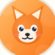
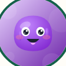

{{ themeDesc }}
--color-star-text на светлом 5.8:1. Чистое золото var(--star) даёт 4:1 на тёмно-зелёном — только для иконок, полос и крупных цифр. На золотой заливке текст всегда --color-text.
white-space: nowrap: осталось 11 ★.Intl.PluralRules('ru'): {{ plurals }}.tabular-nums, тысячи через неразрывный пробел: 1 250.aria-label и всплывающей подсказкой. Эмодзи в интерфейсе не используются.object-fit: cover. «Хватает» = лента-закладка: иконка + слово + цвет. Название — максимум 2 строки.
обычный
выбран АМбез аватараtransform и opacity; уважаем prefers-reduced-motion.--color-ink-900. Шторки закрываются системной кнопкой «Назад». Нижняя навигация учитывает safe-area-inset-bottom.